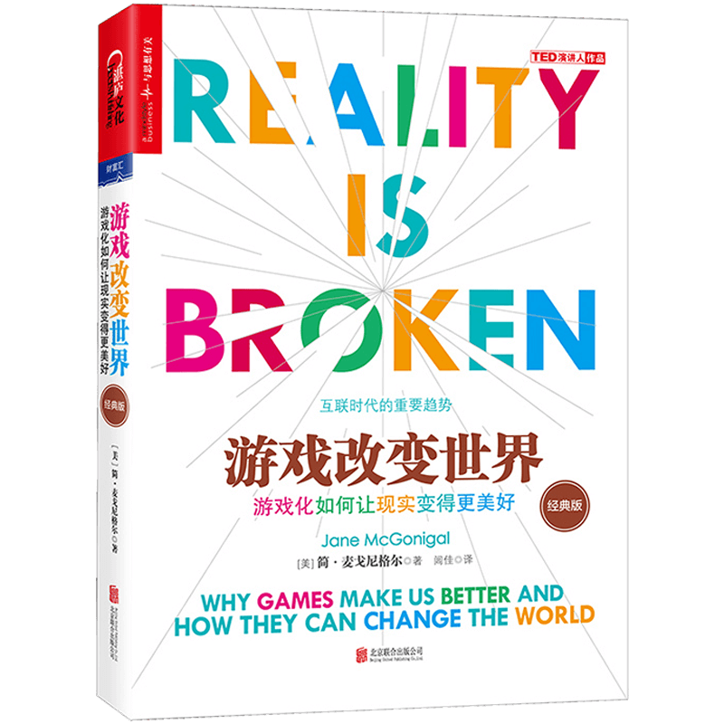

注：【】部分为笔者心得，非原文摘抄。
- 凡是看出风暴即将来袭的人，都应该提醒别人。
- 所有的游戏都有 4 个决定性特征：目标、规则、反馈系统和自愿参与。
- 玩游戏，就是自愿尝试克服种种不必要的障碍。——Bernard Suits
- 反馈的种类和力度是数字和非数字游戏之间最重要的区别。
- 人在能力极限下进行工作时所达到的投入状态，是没有什么能够比得上的。
- 玩的对立面不是工作，而是抑郁。——Brian Sutton-Smith
- 【选择一份工作，首先要看是否认同这家公司的价值观，否则很难找到一份让自己满意的工作。】
- 【游戏是人类的天性。】
- 【每个人都有当主角的需求。】
- 创造性成就和能力的提高能带来满足感和愉快感。
- 游戏要赚钱、要成为大热门，靠的是它能为玩家提供多少满意度和积极的情绪，即能让玩家感到多幸福。
- 必须找到享受世界和生活的方法，不一定非得随时随地全力以赴地发挥自己潜能的极限。
- 一些玩家对心爱的游戏觉得“上瘾”，最大的潜在原因就是自豪感。
- 创造幸福可以通过从事艰苦工作，从事哪些能带来奖励的活动。
- 我们会对自己喜欢的东西产生耐受性，开始想要更多，需要更大、更好的回报才能出发同等水平的满足感和愉悦感。
- 只要经常沉浸在自我奖励的艰苦工作当中，我们就会更频繁地感受到幸福，不管我们在生活中还遭遇了其它什么事情。
- 源自内在奖励的幸福有着令人难以置信的适应性。
- 自己才是幸福的唯一来源。
- 幸福生产力，指的是深深地沉浸在能产生直接而明显结果的工作中所产生的一种感觉。结果越清晰，实现得越快，感受到的幸福生产力就越多。
- 满意的工作总是从两件事开始的：一是明确的目标，二是实现这一目标的可操作性步骤。
- 提高人们日常生活质量最快速的方法，就是“赋予人们具体的目标，一件可以去做又能保有期待的事情”。——索尼娅·柳博米尔斯基
- 没有和自己的努力清晰联系起来的明显结果，我们就不可能对自己的工作真正满意。
- 要满足我们，工作必须具备如下条件：可以立刻行动的明确目标以及生动直接的反馈。
- 合适的失败反馈是一种奖励，它使我们更加投入，对自己的成功更有把握。
- 游戏要公平，有成功的机会，失败才会有趣。——克莱夫·汤普森
- 胜利往往终结乐趣，但失败能够维持乐趣。
- 真正擅长某件事，还不如没有那么擅长时有意思。
- 有趣的失败是延长游戏体验、扩展学习过程的一个好办法。
- 面对失败，学会停留在无比乐观的状态中，是我们能够在游戏中学到且应用于现实生活的一个重要情绪力量。
- 实时反馈可以很容易让人从失误中学习。
- 和现实生活中的朋友和家人进行游戏，能为你创造机会，主动和你最关心的人保持联系。
- 互相“调侃”是强化我们彼此之间的正面感受最迅速也最有效的一种方式。
- 教导或指点的某人成功时，我们的感受比个人自豪感更具爆发力。
- 要体验真正的意义，不必贡献出真正有价值的东西，但我们必须得到做出贡献的机会。我们需要一种方法，跟其他在乎同一宏伟目标的人联系起来，而不管目标本身到底是什么，我们需要机会来反映这一共同事业的宏伟规模。
- 故事为意义奠定了基础，为行动提供了框架。——Trent Polack
- 宏伟的环境激励我们承担宏伟的项目，因为它们清晰地展示了人类齐心协力的潜力。事实上，它们扩展了我们对人类潜力的认识。
- 真正的实现，来自旅行对他人的承诺。我们希望别人不是因为“我们是什么人”而尊敬我们，而是因为我们做了某件真正重要的事情而尊敬我们。
- 我们越是在游戏里学习为宏伟事业做奉献，就越有可能在真实世界里为宏伟事业做奉献。
- 了解自己想要什么并非常态，它是罕见而艰巨的心里成就。——Abraham Maslow
- 游戏向我们展示了在生活里真正想要的东西：更满足的工作、更大的成功希望、更强的社会联系以及有机会参与超越自我的宏伟事业。
- 采用游戏的形式去做，哪怕是打扫清洁这种最平凡的事情也能让人体验到自豪感，只要你让它变得更具挑战性，或是要求我们在做的时候更具创新性。
- 意义感就是有趣的故事、英勇的目标以及参与宏伟事业的感觉。
- 把我们本来就喜欢的事情变得更像游戏值得一试。它能让我们做得更好，帮助我们把目光放得更为高远。
- 社群精神是一种强烈的团结感、凝聚力和社会纽带感，能预防孤独和疏离。
- 要成为任何一个社群的成员，都需要理解社群的目标、接受实现这些目标的策略和实践。
- 每天花 5 分钟左右考虑死亡。
- 自助一般不是社会性的，但很多幸福活动确实社会性的。
- 通往不幸有一个最简单的步骤：什么都不做。——本·沙哈尔
- 面对死亡可以迫使我们转变心态，有助于我们珍惜现状，把注意力集中到对我们最重要的内在目标上。
- 游戏玩家有创意、善坚持，总是用于迎接良好的挑战。他们强大的认知储备，再加上久经考验的投入度，是一种有待开发的宝贵资源。
- 如果自愿工作设计得想一个出色的任务，玩家便获得了完成了不起的事情的力量。
- 多人一起应对挑战比彼此竞争做对手更开心。
- 每当我们把个人的突出优势出色地运用到团队环境中，我们似乎是最幸福快乐的。
- 长远的眼光，意味着在远远大于日常生活规模的层面上工作。
- 我们很擅长积极思维，但总爱回避最糟糕的场景，如此一来，如果不幸场面真的出现，那么我们更容易遭受折磨，难以适应。
- 立志动员地球上的每一个人参与同一款游戏，并不是一个胆大妄为的目标。实现这一目标，意味着对整个地球和社会进行重大改造。
- 人生中最紧迫的使命是在清醒的每一刻里，全力以赴地深深地投入现实。
- 游戏并不依赖于稀缺或有限资源。
- 游戏的 4 条永恒真理：第一，优秀的游戏可以发挥重要的作用，改善真实生活的品质；第二，优秀的游戏支持大规模的社会合作与公民参与；第三，优秀的游戏帮助我们过上可持续的生活，变成更具适应性的物种；第四，优秀的游戏引导我们为人类面临的最迫切挑战创造新的解决方案。